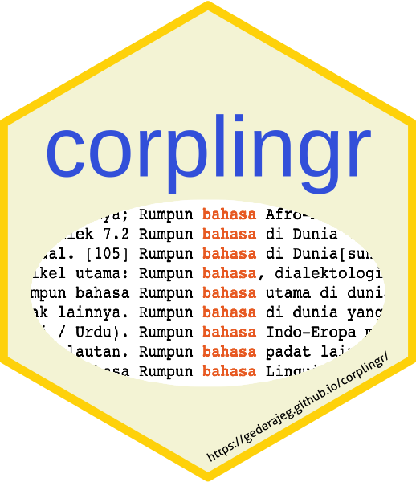

corplingr 
The goal of corplingr is to provide tools for generating concordance, collocates, and word-frequency list from raw/unannotated corpora. Users are suggested to use collogetr as the specific package for extracting window-span collocates based on input from the sentence-based corpus of Indonesian Leipzig Corpora collection); corplingr so far provides tested functions to generate concordance/keyword in context (KWIC) display and frequency list from the sentence-based corpus of Leipzig Corpora.
Installation
You can install the development version from GitHub with remotes:
# install.packages("remotes") remotes::install_github("gederajeg/corplingr")
How to cite
Please cite this repository as follows if you use it for your academic purposes (e.g., research or teaching):
Rajeg, Gede Primahadi Wijaya. 2021. corplingr. Open Science Framework (OSF). doi: 10.17605/OSF.IO/X8CW4 osf.io/x8cw4.
More details later…